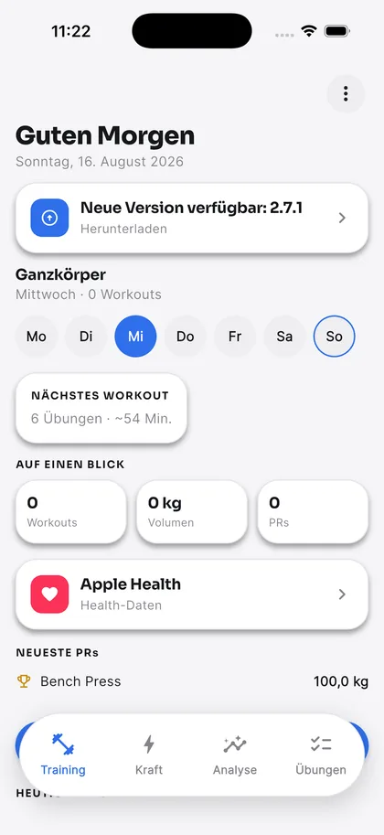
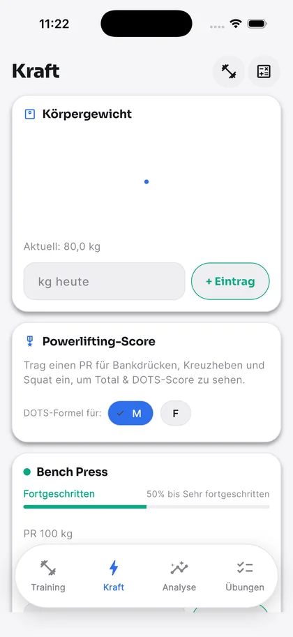
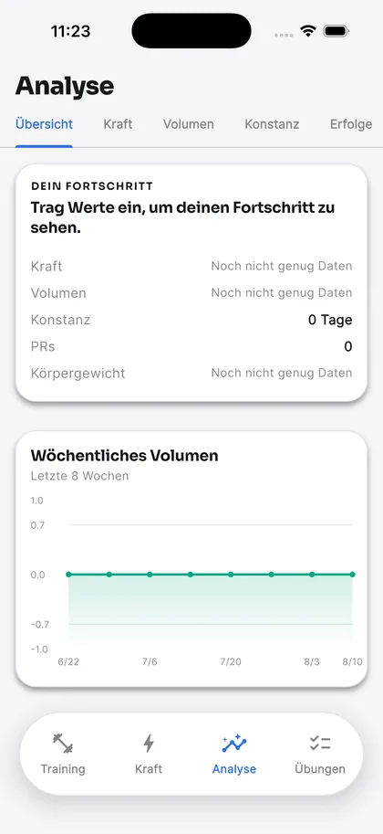
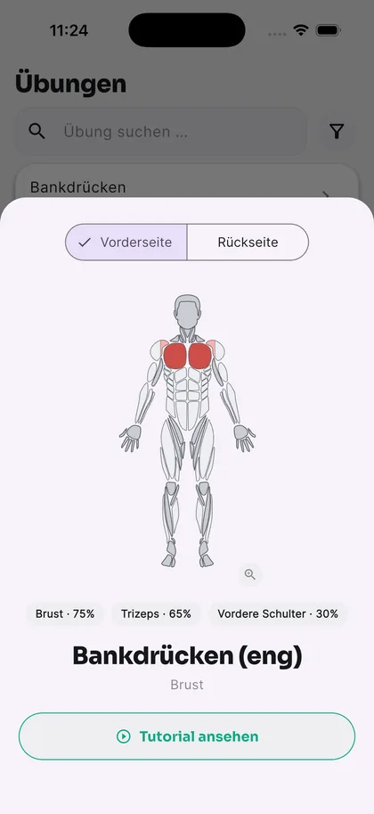

Dein Training. Deine Daten. Dein Gipfel.Your training. Your data. Your peak.
Ironpeak FitnessIRONPEAK
Fitness-App · Android · iOS · Windows · macOSFitness app · Android · iOS · Windows · macOS
Trainingsplaner, Krafttracker und ehrliche Analysen in einer nativen App. Kein Konto, keine Cloud – alles bleibt auf deinem Gerät.Workout planner, strength tracker and honest analytics in one native app. No account, no cloud – everything stays on your device.
Ironpeak plant dein Training, zählt jede Wiederholung und zeigt dir ehrlich, ob du stärker wirst. Ohne Abo, ohne Konto, ohne Cloud. Nur du, die Hantel und deine Zahlen.Ironpeak plans your training, counts every rep and tells you honestly whether you're getting stronger. No subscription, no account, no cloud. Just you, the bar and your numbers.
546
Übungen, jede mit Muskelkarteexercises, each with a muscle map
10
Sprachen, von Deutsch bis Türkischlanguages, from German to Turkish
4
Plattformen aus einer Codebasisplatforms from one codebase
0
Server. Deine Daten bleiben bei dir.servers. Your data stays with you.
02Die AppThe app
Vier Tabs. Alles drin.Four tabs. Everything inside.
Kein Menü-Labyrinth: Training, Kraft, Analyse und Übungen – Kalender, Galerie, Backup und Einstellungen liegen einen Tap entfernt.No menu maze: Training, Strength, Analytics and Exercises – calendar, gallery, backup and settings are one tap away.
Training
Heute steht an. Satz für Satz.Today's session. Set by set.
Pläne nach Wochentag oder Rotation – selbst gebaut, importiert oder aus acht Vorlagen. Im geführten Workout trägst du jeden Satz per Slider oder Tastatur ein, mit RPE oder RIR, Supersätzen und Drag & Drop. Der Pausentimer läuft nach echter Uhrzeit und meldet sich per Benachrichtigung – auch wenn das Handy gesperrt war.Plans by weekday or rotation – built by hand, imported, or picked from eight templates. In a guided workout you log every set with a slider or the keyboard, with RPE or RIR, supersets and drag & drop. The rest timer runs on real clock time and notifies you when it's done – even if your phone was locked.
Für jede Übung ein konkreter Vorschlag fürs nächste Mal: mehr Gewicht, eine Wiederholung mehr – oder ein Deload nach zwei schwachen Einheiten.A concrete suggestion for next time on every exercise: more weight, one more rep – or a deload after two weak sessions.
Progressive OverloadProgressive overload
RPE / RIR
SupersätzeSupersets
Zeit & CardioTime & cardio

KraftStrength
Wie stark bist du wirklich?How strong are you, really?
PRs und Verlauf für Bankdrücken, Kreuzheben und Kniebeuge, mit Trend und Plateau-Erkennung. Statt nur einer DOTS-Zahl bekommst du ein Kraftlevel in Klartext – von Anfänger bis Elite, mit Fortschrittsbalken zum nächsten Level. Dazu 1RM- und Plattenrechner.PRs and history for bench press, deadlift and squat, with trends and plateau detection. Instead of a bare DOTS number you get a plain-language strength level – Beginner to Elite, with a progress bar to the next one. Plus a 1RM and a plate calculator.
KraftlevelStrength level
DOTS-ScoreDOTS score
1RM-Rechner1RM calculator
PlattenrechnerPlate calculator

AnalyseAnalytics
Ehrliche Zahlen. Keine erfundenen Kurven.Honest numbers. No made-up curves.
Übersicht, Kraft, Volumen, Konstanz und Erfolge – jede Zahl und jedes Diagramm kommt aus deinen echten Einträgen. Reichen die Daten noch nicht, sagt die App das ehrlich, statt eine Linie zu erfinden.Overview, strength, volume, consistency and achievements – every number and every chart comes from what you actually logged. Not enough data yet? The app says so instead of inventing a line.
WochenvolumenWeekly volume
TrainingsserienStreaks
ErfolgeAchievements
AktivitätskalenderActivity calendar

ÜbungenExercises
546 Übungen. Jede mit Muskelkarte.546 exercises. Each with a muscle map.
Durchsuchbar und in sieben Kategorien sortiert. Für jede Übung zeigt eine gezeichnete Körperfigur, welche Muskeln wie stark arbeiten – vorne und hinten. Eigene Übungen legst du an, indem du die Muskeln direkt antippst. Die Datenbank kommt live von GitHub und funktioniert auch offline.Searchable and sorted into seven categories. For every exercise, an illustrated body shows which muscles work and how hard – front and back. Create your own by tapping the muscles right on the figure. The database loads live from GitHub and works offline too.
MuskelkarteMuscle map
Technik-TippsForm tips
Eigene ÜbungenCustom exercises
Live-DatenbankLive database

01
Training
KraftStrength
AnalyseAnalytics
ÜbungenExercises
03Probier's ausTry it
Echte Formeln. Direkt hier.Real formulas. Right here.
Diese drei Werkzeuge rechnen mit denselben Formeln und Daten wie die App – direkt aus ihrem Quellcode übernommen. Keine Attrappe.These three tools run on the same formulas and data as the app – ported straight from its source code. Not a mock-up.
PlattenrechnerPlate calculator
plate_calculator.dart
kg
Pro SeitePer side25 · 15= 100 kg
Derselbe Greedy-Algorithmus wie in der App – für Standardscheiben (25 bis 0,5 kg) exakt, nicht nur geschätzt.The same greedy algorithm as the app – exact, not just a guess, for standard plates (25 down to 0.5 kg).
KraftlevelStrength level
strength_standards.dart
kg
kg
Fortgeschritten
0 % bis Sehr fortgeschritten · 1,25 × Körpergewicht
AnfängerBeginner
GeübtNovice
FortgeschrittenIntermediate
Sehr fortgeschrittenAdvanced
Elite
Dieselben Schwellen wie in der App: Bestleistung geteilt durch Körpergewicht – eine bewusst einfache Näherung, verständlicher als eine nackte DOTS-Zahl.The same thresholds as the app: best lift divided by bodyweight – a deliberately simple approximation, easier to read than a bare DOTS number.
MuskelkarteMuscle map
exercise_muscle_map.dart
Wähl eine Übung: Die Figur färbt jeden Muskel nach seiner Aktivierung – von Weiß über Hellrot bis Dunkelrot, genau wie in der App.Pick an exercise: the figure colors every muscle by how hard it works – from white through light red to dark red, just like in the app.
VorneFrontHintenBack
0 %100 %
Aktivierungswerte aus der Datenbank der App. Körperfigur: react-native-body-highlighter (MIT).Activation values from the app's database. Body figure: react-native-body-highlighter (MIT).
04AusrüstungGear
Alles für den Aufstieg.Everything for the climb.
Progressive OverloadProgressive overload
Konkrete Vorschläge fürs nächste Training – mehr Gewicht, mehr Wiederholungen oder ein Deload.Concrete suggestions for your next session – more weight, more reps or a deload.
RPE & RIR
Anstrengung pro Satz. Du wählst die Skala, jeder Satz merkt sich seine.Effort per set. You pick the scale, every set remembers its own.
SupersätzeSupersets
Übungen verknüpfen – das geführte Workout wechselt automatisch zwischen ihnen.Link exercises – the guided workout alternates between them for you.
PausentimerRest timer
Läuft nach echter Uhrzeit und meldet sich per Benachrichtigung, wenn die Pause vorbei ist.Runs on real clock time and pings you with a notification when rest is over.
Zeit & CardioTime & cardio
Halten auf Zeit, Cardio mit Dauer und Tempo – sauber getrennt vom gehobenen Volumen.Timed holds, cardio with duration and speed – kept apart from lifted volume.
CSV-ImportCSV import
Deinen Verlauf aus Strong, Hevy oder FitNotes einfach mitnehmen.Bring your history over from Strong, Hevy or FitNotes.
Apple Health & Health Connect
Schritte und Gewicht lesen, fertige Workouts zurückschreiben.Read steps and weight, write finished workouts back.
ErfolgeAchievements
Vier Pfade mit Stufen – live aus deinen echten Daten berechnet, nie nur ein gespeichertes Häkchen.Four paths with levels – calculated live from your real data, never just a stored checkmark.
Fotos & KörpermaßePhotos & measurements
Eine Galerie für Fortschrittsfotos und Körpermaße, damit Veränderung sichtbar wird.A gallery for progress photos and body measurements, so change becomes visible.
KalorienrechnerCalorie calculator
Schätzt deinen täglichen Kalorien- und Makrobedarf aus Körpergewicht und Ziel.Estimates your daily calories and macros from bodyweight and goal.
Backup in deiner HandBackups you own
Als Datei, über die Zwischenablage oder mit einem Tap in den Download-Ordner.As a file, via the clipboard, or one tap into your Downloads folder.
8 Planvorlagen8 plan templatesPlateau-ErkennungPlateau detectionTage verschiebenMove a training dayEinseitige ÜbungenUnilateral exercisesDOTS-ScoreDOTS scoreTägliche ErinnerungDaily reminderEigene FarbenCustom colorsHell- & DunkelmodusLight & dark mode
Update-Check über GitHubUpdate checks via GitHubAktivitätskalenderActivity calendarDrag & Drop im WorkoutDrag & drop mid-workoutPlan teilenShare plansRep-Max-TabelleRep-max tableGeführtes OnboardingGuided onboardingÜbungsnotizenExercise noteskg-Eingabe per SliderWeight via slider
05DatenschutzPrivacy
Deine Daten bleiben auf deinem Gerät.Your data stays on your device.
0Serverservers
0Kontenaccounts
0Trackertrackers
100 %auf deinem Geräton your device
Alles liegt lokal in einer SQLite-Datenbank auf deinem Gerät. Von sich aus geht die App nur für zwei Dinge ins Netz: die Übungsdatenbank laden – offline nimmt sie die eingebaute Kopie – und bei GitHub nach Updates schauen. Deine Trainingsdaten werden dabei nie übertragen.Everything lives in a local SQLite database on your device. On its own, the app only goes online for two things: loading the exercise database – offline it uses the built-in copy – and checking GitHub for updates. Your training data is never sent anywhere.
Backups landen nur dort, wohin du sie selbst schickst: als Datei über das Teilen-Menü, etwa in iCloud Drive oder Google Drive. Keine automatische Synchronisierung, kein Upload im Hintergrund. Und auch diese Webseite setzt keine Cookies und lädt keine Tracker oder fremden Schriften.Backups only go where you send them: as a file through the share menu, say to iCloud Drive or Google Drive. No automatic sync, no background upload. And this website doesn't set cookies or load trackers or third-party fonts either.
06GipfelSummit
Hol dir Ironpeak.Get Ironpeak.
Kostenlos für Android, Windows, macOS und iOS – direkt von GitHub, ohne Store und ohne Konto.Free for Android, Windows, macOS and iOS – straight from GitHub, no store and no account.Aktuell:Latest:
·
Dein GerätYour device
Android
Als APK direkt installieren. Beim ersten Mal „Unbekannte Apps installieren" erlauben – Updates meldet die App danach selbst.Install the APK directly. Allow "Install unknown apps" the first time – after that, the app tells you about updates itself.
Echter Installer mit Startmenü-Eintrag und sauberer Deinstallation – oder portabel als ZIP. Nicht signiert: Warnt SmartScreen, „Weitere Informationen" → „Trotzdem ausführen".A real installer with a Start-menu entry and a clean uninstall – or portable as a ZIP. Unsigned: if SmartScreen warns you, choose "More info" → "Run anyway".
Als ZIP. Nicht signiert und nicht notarisiert: macOS blockiert den ersten Start – unter Systemeinstellungen → Datenschutz & Sicherheit → „Trotzdem öffnen" einmal freigeben.As a ZIP. Unsigned and not notarized: macOS blocks the first launch – allow it once under System Settings → Privacy & Security → "Open Anyway".
Unsignierte IPA – installierbar nur, wenn du sie selbst signierst, etwa mit einem eigenen Apple-Developer-Konto.Unsigned IPA – installable only if you sign it yourself, for example with your own Apple Developer account.